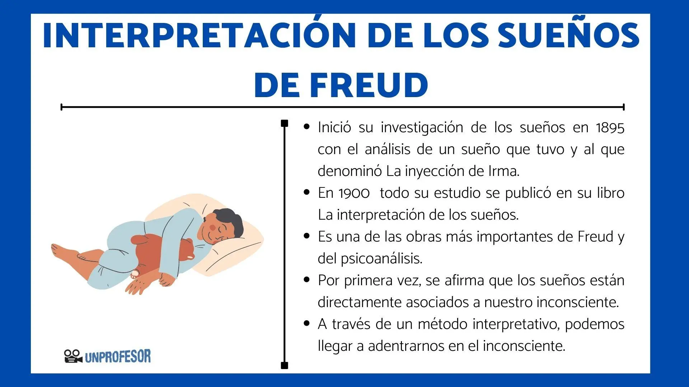

La ciencia del sueño
 La somnología o ciencia del sueño estudia cómo y por qué dormimos
y los mecanismos implicados. Durante el sueño, el cerebro realiza funciones
reparadoras esenciales: procesa recuerdos, regula emociones y fortalece
el sistema inmunitario. Se divide en dos fases: No REM y REM.
La somnología o ciencia del sueño estudia cómo y por qué dormimos
y los mecanismos implicados. Durante el sueño, el cerebro realiza funciones
reparadoras esenciales: procesa recuerdos, regula emociones y fortalece
el sistema inmunitario. Se divide en dos fases: No REM y REM.
Soñar permite procesar emociones, estimular la creatividad y consolidar aprendizajes. Dormir poco se asocia con problemas de salud física y mental.
"El sueño es la cadena dorada que mantiene la salud y el cuerpo juntos." — Thomas Dekker
Dormir adecuadamente es esencial; pensar que
dormir poco mejora la productividad es un error.
¿A qué se deben las pesadillas?
Las pesadillas son sueños angustiantes que suelen ocurrir en la fase REM del sueño.
Se han vinculado a diversas causas, entre ellas:
- Estrés y ansiedad: las preocupaciones cotidianas o eventos traumáticos pueden generar pesadillas.
- Trastornos psicológicos: personas con trastornos como el trastorno de estrés postraumático (TEPT) o la depresión pueden experimentar pesadillas más frecuentemente.
- Consumo de sustancias: el uso de medicamentos, drogas o alcohol también puede desencadenar pesadillas.
- Problemas de sueño: trastornos del sueño, como la apnea del sueño o el insomnio, pueden estar relacionados con pesadillas.
Los ciclos del sueño
 Cada noche pasamos entre 4 y 6 ciclos de alrededor de 90 minutos.
Cada uno incluye etapas de sueño ligero, profundo y fase REM.
Cada noche pasamos entre 4 y 6 ciclos de alrededor de 90 minutos.
Cada uno incluye etapas de sueño ligero, profundo y fase REM.
Al inicio predomina el sueño profundo (que integra lo que sería la recuperación física), y al final el REM (procesamiento emocional de todos los recuerdos del día). De estudia forma podríamos asegurar en base a últimos estudios, que realmente el cerebro nunca descansa, siempre está en alerta.
Entonces, ¿cómo usar una calculadora de sueño de forma inteligente?
- Como punto de partida:
- ayuda a estimar cuántos ciclos completos caben en tus 7–9 horas de sueño.
- Con regularidad:
- importa más que el minuto exacto es que mantengas horarios consistentes.
- Con autocontrol:
- si despiertas cansado aun siguiendo la app, lo mejor es ajustar la hora de dormir.
Etapas:
N1 - Somnolencia
N2 - Sueño ligero
N3 y N4 - Sueño profundo
REM - Movimientos oculares rápidos
La psicología del sueño
 Analiza cómo la mente interpreta y procesa experiencias durante el sueño. En REM hay emociones intensas; en No REM, pensamientos simples.
Los sueños ayudan a procesar emociones y estimular la creatividad. El psicoanálisis distingue entre contenido manifiesto y latente.
La cafeína (C8H10N4O2) bloquea receptores de adenosina. La energía se mide en ATP, liberando P3+.
Descanso necesario según rango de edad:
- Adultos jóvenes (24–40 años): suelen necesitar cerca de 5 ciclos para levantarse descansados. El problema es que el estrés laboral y el uso de pantallas acortan sus noches, interrumpiendo el sueño profundo.
- Padres primerizos (28–42 años): la fragmentación del sueño hace que completar ciclos sea casi imposible. Aunque duerman muchas horas, si se despiertan cada 2–3 horas, el descanso nunca se siente completo.
- Adultos mayores (35–55 años en adelante): la edad disminuye el porcentaje de sueño profundo (N3), lo que explica por qué sienten que duermen “más ligero”. Mantener al menos 4 ciclos completos sigue siendo clave para la salud cardiovascular y cognitiva.
- Profesionales de alto rendimiento (30–50 años): buscan optimizar su productividad. Para ellos, mantener 5–6 ciclos regulares es la base de un rendimiento sostenido, más allá de cualquier truco o suplemento.